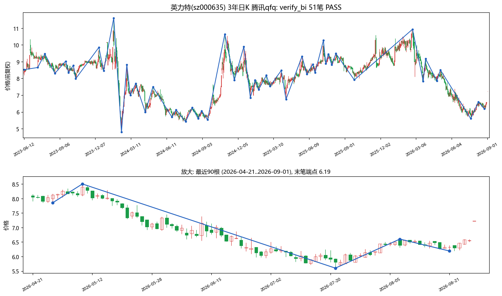
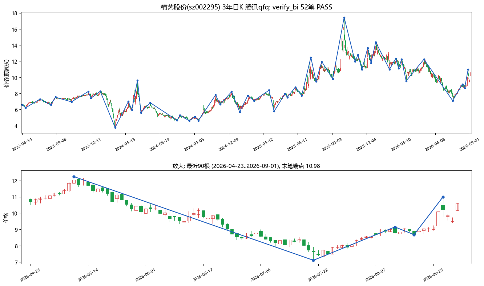
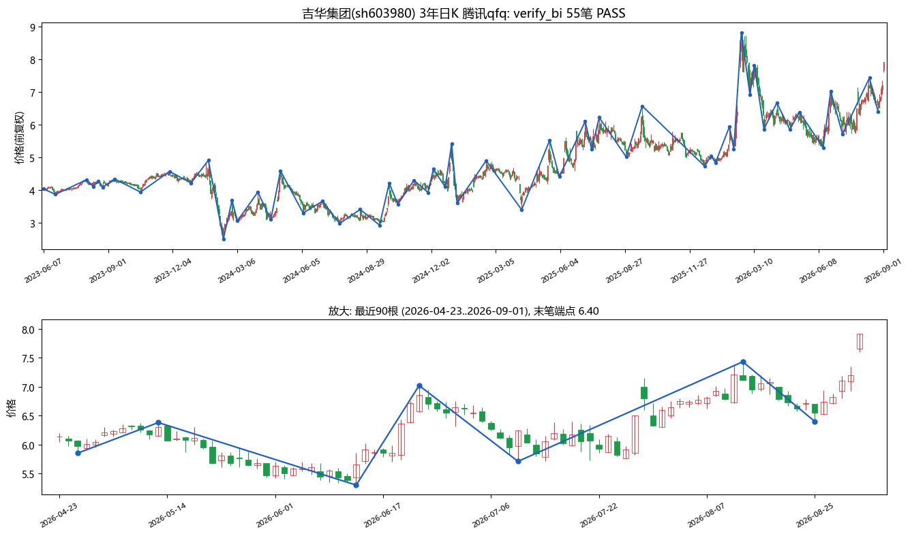
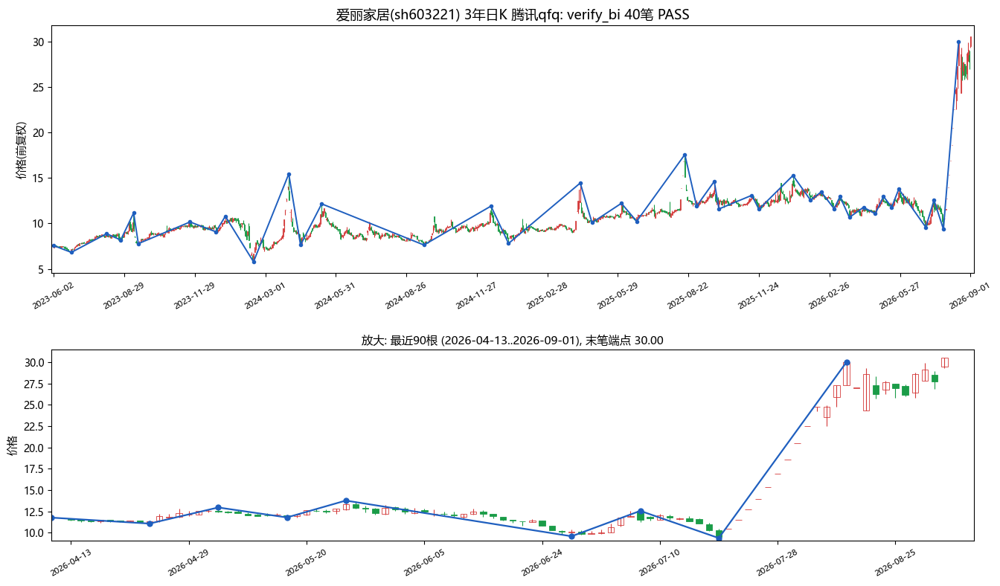
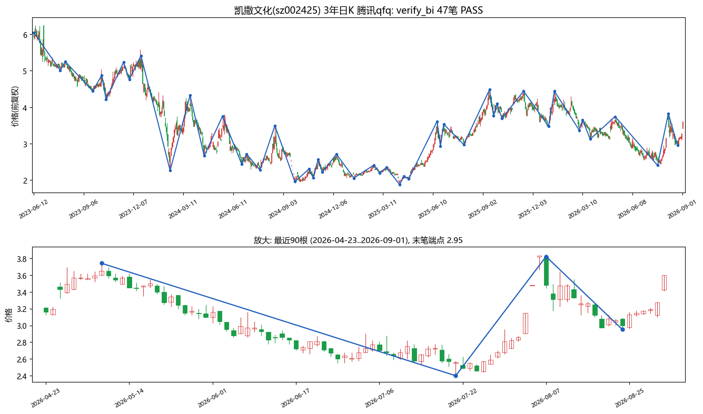
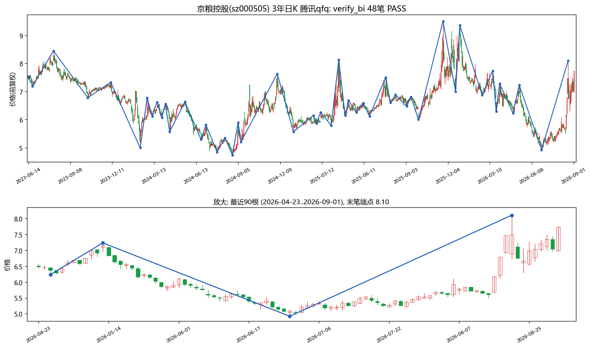
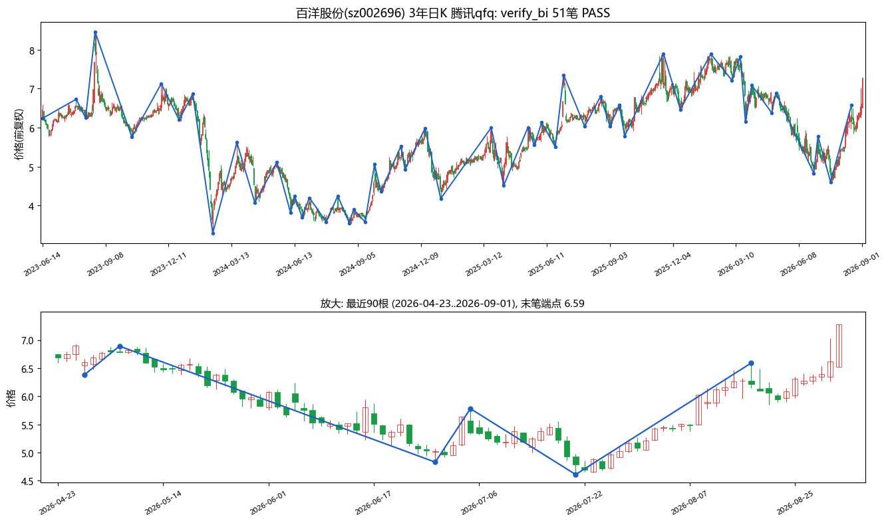
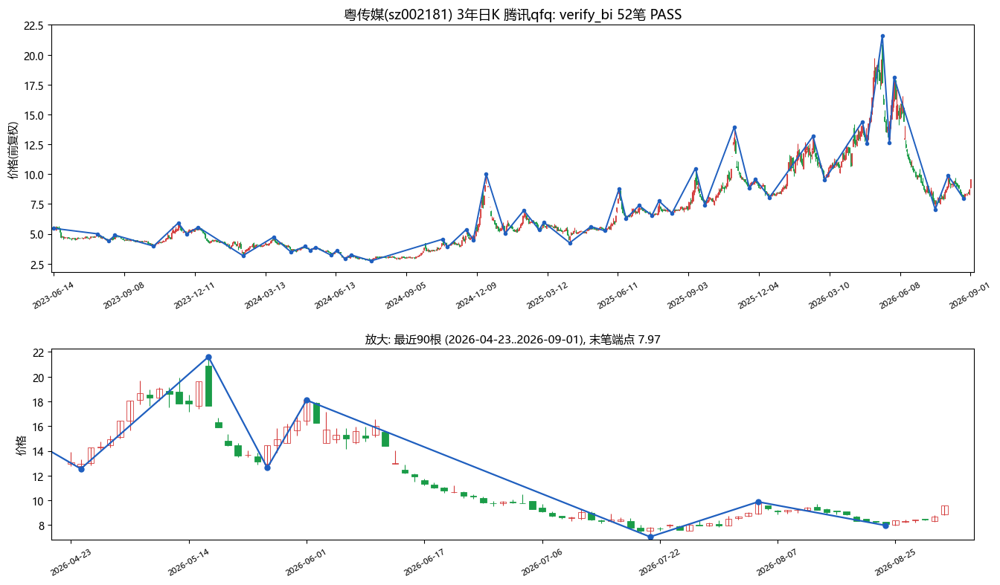
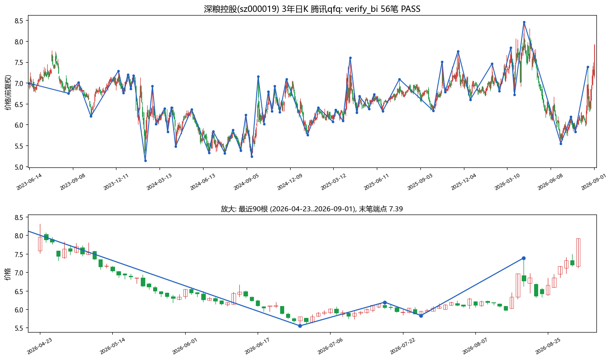
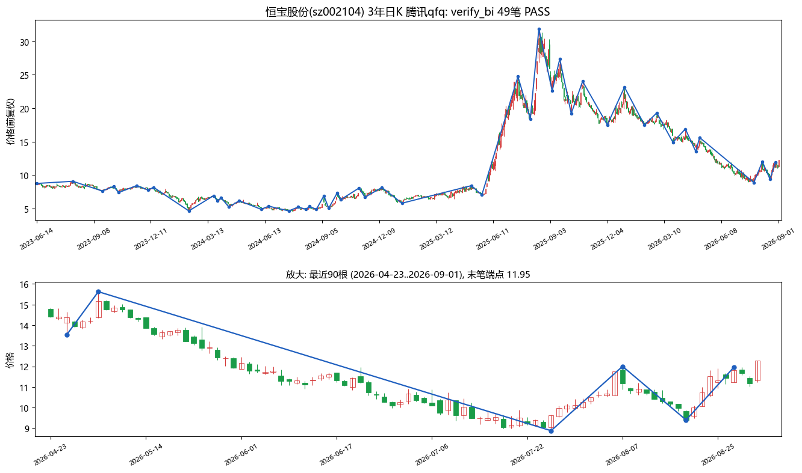

📊 今日首板Top10 · 3年日K笔划分可视化 + 成功率回测（2026-09-01）
今日涨停池实时快照（65涨停/48首板）按封板时间取前10只，腾讯qfq 781根（2023-06~2026-09-01）：verify_bi 10/10 PASS（501笔零违规）+ 278信号前向收益回测；含逐只K线笔划分图
📊 核心数据（10只 × 3年日K）
278
信号（B1×1/B2×168/B3×15/S×94）
87.1%
B2 win10（n=168，ret20 +10.6%）
+15.5%
B3 平均10日收益（n=15，hit3 100%）
-10.9%
S2 10日内最大跌幅中位（n=87）
口径：B信号=次日开盘进场、S信号=信号日收盘出场；win10=10日后收盘胜率；hit3=5日内触及+3%；3年窗口覆盖2023-09与2024-09两轮牛熊转折
① 样本与流水线
样本（封板时间序）：英力特000635、精艺股份002295、吉华集团603980、爱丽家居603221、凯撒文化002425、京粮控股000505、百洋股份002696、粤传媒002181、深粮控股000019、恒宝股份002104。
流水线：verify_bi 10/10 PASS（alt=0 gap=0 ext=0，501笔）→ matplotlib 笔划分可视化（全局+最近90根放大）→ dump_signals→signal_stats 278信号前向回测。
② 回测总体（按信号类型）
| 类型 | n | 5日收益 | 10日收益 | 20日收益 | MAE中位 | MAE最差 | hit3% |
|---|
| B1 一买 | 1 | +2.46% | +12.93% | +20.94% | -0.82% | -0.82% | 100% |
| B2 二买 | 168 | +6.32% | +9.24% | +10.60% | -1.12% | -9.54% | 98.2% |
| B3 三买 | 15 | +9.71% | +15.47% | +12.19% | -0.89% | -9.27% | 100% |
| S1 一卖 | 1 | -3.30% | -4.40% | -13.94% | -9.17% | -9.17% | 100% |
| S2 二卖 | 87 | -6.02% | -6.53% | -7.29% | -10.91% | -32.77% | 97.7% |
| S3 三卖 | 6 | -2.44% | -6.71% | -5.06% | -15.77% | -19.71% | 100% |
3年窗口含完整下跌段，S类样本（94个）远多于2年窗口（44个），MAE_P50 -10.91% 表示S2后10日中位跌幅逾一成，卖出侧读数质量在弱市结构中更突出。B3 MAE最差仅-9.27%（2年窗口曾见-18.66%），本轮三买无深度失败案例。
③ 置信度分桶（win10）
| 类型 | conf桶 | n | win10% | avgRet10 | win20% |
|---|
| B2 | <60 | 155 | 87.1 | +9.05% | 78.7 |
| B2 | 60-69 | 9 | 88.9 | +9.07% | 77.8 |
| B2 | 70-79 | 2 | 100.0 | +16.85% | 50.0 |
| B2 | ≥80 | 2 | 50.0 | +16.36% | 50.0 |
| B3 | <60 | 6 | 100.0 | +25.40% | 100.0 |
| B3 | 60-69 | 8 | 75.0 | +9.18% | 62.5 |
| S2 | <60 | 82 | 86.6 | -7.00% | 80.5 |
| S3 | <60 | 3 | 100.0 | -12.60% | 66.7 |
B2 60-69 弱桶规律第三次确认不存在（88.9% ≈ <60桶87.1%，三次独立样本池方向一致），conf 过滤策略维持 QDZ=40 全显示；B3<60 桶 ret10 +25.4% 最强但 n=6，B3 60-69 反而 75%，conf 高低与 B3 胜率尚无稳定单调关系。
④ 年度稳定性（3年）
| 类型 | 年份 | n | win10% | avgRet |
|---|
| B2 | 2024 | 51 | 84.3 | +9.39% |
| B2 | 2025 | 69 | 89.9 | +7.42% |
| B2 | 2026 | 48 | 85.4 | +11.67% |
| S2 | 2024 | 23 | 87.0 | -7.72% |
| S2 | 2025 | 30 | 86.7 | -6.38% |
| S2 | 2026 | 33 | 81.8 | -5.99% |
B2 三年 win10 全部 84%~90%，跨牛熊稳定；S2 三年 82%~87% 同样稳定。注意：2年池（早盘名单）S2 2026年 win10 曾低至53.8%，3年池（本名单）为81.8%——两池名单不同，差异主要来自样本构成而非时间效应，再次提示小池子单年数字波动大，需大池复核。
⑤ 笔划分可视化（10只 · 3年日K）

英力特(000635) B2×20 + S2×19 + S3×1：典型宽幅震荡结构，买卖信号均衡交替；2026-08-07 三卖@6.60 后贴近期末，放大图可见下跌段刚展开。

精艺股份(002295) B2×18 + B3×3 + S2×8：3年 +61%（3.76~17.44 宽幅区间），2024 年深跌见底后 2025 年筑底回升，B3 群出现在右侧回升段。

吉华集团(603980) B2×18 + B3×4 + S2×5：3年 +98%（低点 2.51 翻倍至 7.92），深跌筑底后的回升结构，每个下跌中枢后的回抽均给出可操作二买/三买。

爱丽家居(603221) B2×12 + B3×3，全程零卖出信号：3年 +308%（7.49→30.55）本批最强，主升段 B3 密集，零S信号与单边强势结构完全自洽。

凯撒文化(002425) B2×10 + S2×17 + S3×2（2024-03/05 连续三卖）：2024 年初下跌结构 S 信号密集命中，随后长期底部 B2 开始接力。

京粮控股(000505) 本批唯一一买 B1@4.73（2024-08-26，conf56）+ B2×15：一买精准落在 2024-09 行情启动前夜，后 20 日 +20.9%。

百洋股份(002696) B2×21 + S2×23 + S3@5.78（2026-07-03，conf71）：底部箱体反复最充分的样本，S3 出现后 10 日 -12.6%（S3<60桶 avgRet10 口径）。

粤传媒(002181) B2×14 + B3×3 + S2×2：2025-2026 重心缓慢抬升，B 信号主导。

深粮控股(000019) B2×23（全批最多）+ S1@8.46（2026-04-13，conf78）+ S2×2：一卖命中阶段顶，其后 20 日 -13.9%；随后底部 B2 密集出现。

恒宝股份(002104) B2×17 + S2×6 + 2×S3（2026-08-07 与 2026-08-27 连续三卖，conf均61）：近月顶部结构递进确认，是 S3 证伪粒度问题（stop 存而不用待办）的天然观察样本。
⑥ 偏差与局限（必读）
选样偏差：首板涨停股为当日最强动量样本，B类信号胜率被结构性抬高，不可外推全市场；10只个股信号自相关，有效独立样本远小于278。名单差异：本池为盘后实时快照（48首板取前10），与早盘池（70首板）名单完全不同，两轮回测数字不可直接对比。极端值：S2 MAE最差-32.77%来自单一深跌个股；B1/S1 各仅1个样本，任何结论都不成立。胜率口径：win10 为10日后收盘价对比，未计入滑点与停牌；hit3 为5日内曾触及+3%，非确定性收益。
回测结论3年跨牛熊窗口下 B2 win10 三年稳定在 84%~90%（ret20 +10.6%），B3 ret10 +15.5% 居首；B2 60-69 弱桶规律在第三个独立样本池中再次不存在，QDZ=40 全显示策略维持；S2/S3 在含下跌段的结构中避险价值显著（MAE中位 -10.9%/-15.8%）。
引擎验证3年窗口 501笔零违规 + 278信号跨 2023-09/2024-09 两次牛熊转折行为一致，笔划分与买卖点引擎稳定性进一步确认；恒宝股份连续 S3 为"B3/S3 证伪增加逐K跌破 stop"待办提供了下一批观察样本。